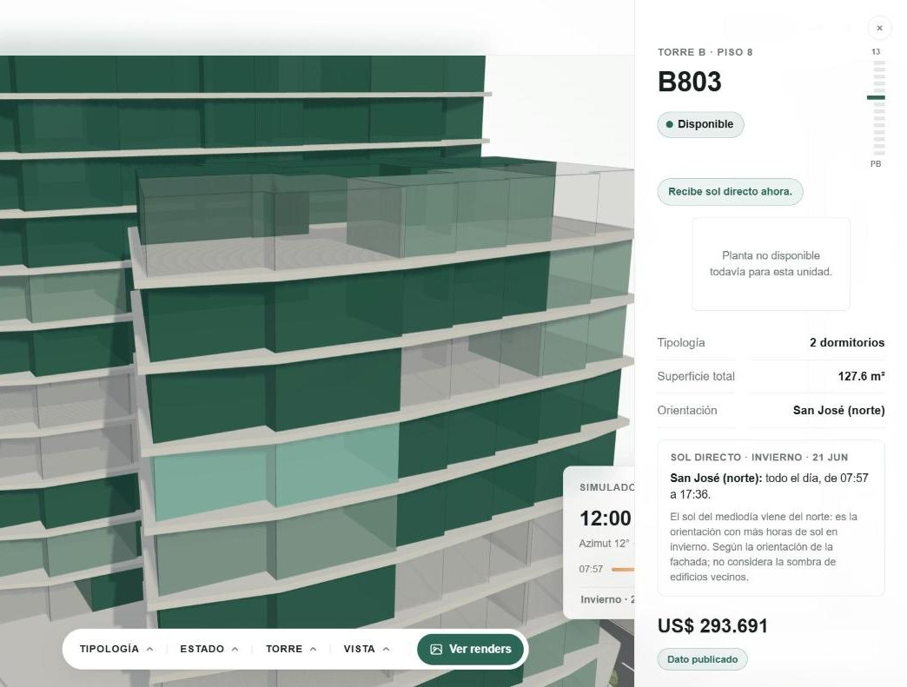
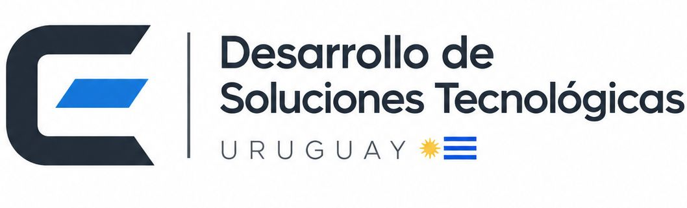

Uruguay · Venta en pozo y loteos
Convertimos la lista de precios en un edificio navegable. El comprador elige su unidad; el vendedor deja de contestar por WhatsApp qué queda.
Te armamos una planta gratis · Sin compromiso
Tu equipo marca una unidad como vendida y el edificio cambia en el momento.
El inventario
El portal muestra unidades. Nadie muestra el inventario.
Datos de ejemplo
| Unidad | Estado |
|---|
Disponible Reservada Vendida
Elegir unidad
BRUSCO tiene 172 unidades en dos torres, con inventario y precios reales. Cada unidad tiene su link: el vendedor la manda por WhatsApp y el comprador abre justo esa.
Dos torres, 172 unidades, cada una con su precio y su estado. Filtrás por tipología, aislás un piso, abrís la ficha y mandás el link de esa unidad por WhatsApp.
Abrir BRUSCO →
Asoleamiento
Es lo primero que pregunta todo comprador, y hoy se contesta de palabra. En Cota mueve la hora y ve el sol girar sobre el edificio, en la fecha que quiera. Incluso el 21 de junio, el peor día del año.
En Uruguay el sol del mediodía viene del norte: las unidades al norte son las mejor asoleadas. Eso deja de ser algo que dice el vendedor y pasa a ser algo que el comprador comprueba solo.
BRUSCO · 21 de junio
Para vos, es el argumento del sobreprecio: la unidad al norte vale más, y ahora se puede demostrar.
Probalo en BRUSCO, el 21 de junio →
Para la desarrolladora
Un portal te dice cuántos vieron el aviso. Nosotros te decimos qué miraron: qué tipología, qué orientación, qué franja de pisos. Con eso reajustás la lista de precios de lo que no se mueve, antes de tener que rematarlo.
Y el lead es tuyo. La consulta te llega directo, con la unidad puesta, y al lado del botón de contacto no hay otro aviso compitiendo por la misma persona.
Clics por tipología · ejemplo
Acá el dato dice: sobran unidades al sur y falta stock de 2 dormitorios al norte. Es una decisión de precio, no de marketing.
Puesta en marcha
Paso 1
Planta tipo, lista de precios y renders del arquitecto. No hay que producir nada nuevo: seis tipologías cubren un edificio entero.
Paso 2
Tus colores y tu formulario, en un link propio. Entra en la web que ya tenés, o vive solo. En dos semanas está online.
Paso 3
Tu equipo marca una unidad como reservada en su panel y el edificio cambia en el momento. Cada vendedor con su usuario. Nadie vuelve a publicar nada.
Precio
Un solo plan, sin letra chica. Precios en dólares, sin IVA.
Pago anual adelantado: dos meses bonificados. Proyectos de más de 200 unidades, o varios proyectos a la vez, se cotizan aparte.
Dudas frecuentes
No lo reemplaza. El portal trae el tráfico; acá se cierra. El aviso enlaza al plano, la persona elige su unidad y la consulta te llega a vos con la unidad puesta. Y el dato de qué miró queda de tu lado, no del portal.
Es la duda más común y es razonable. Se configura: podés mostrar el estado de cada unidad sin el contador global de disponibilidad. El comprador ve qué puede elegir; nadie ve el porcentaje vendido del proyecto.
No. Trabajamos con la planta tipo y los renders que ya te hizo el arquitecto. El material se carga por tipología, no por unidad: seis tipologías cubren un edificio de setenta apartamentos.
Tu equipo, desde un panel propio. El vendedor entra con su usuario, marca la unidad como reservada o vendida y el edificio cambia al instante, sin pasar por nosotros. Cada uno ve solo los proyectos que le tocan: el vendedor cambia estados, el administrador maneja el equipo. Es mejor que la planilla: no hay una versión vieja dando vueltas.
Sí. La posición del sol se calcula para cada fecha y hora con la latitud y la longitud del terreno y la orientación real de la manzana. No es una animación decorativa: si una unidad dice sol de 07:57 a 17:36 el 21 de junio, es porque el sol pasa por esa fachada a esas horas. Lo único que no considera es la sombra de los edificios vecinos, y cada ficha lo aclara.
Dos semanas desde que nos pasás el material. La planta de muestra, que es gratis y sin compromiso, la tenés en tres días.
Quién está detrás
Desarrollo de software y automatización de procesos. Cota nació de una observación simple: las desarrolladoras venden inventarios con herramientas hechas para vender unidades sueltas.
Trabajo directo, sin capas intermedias. El que te atiende es el que construye.

Sin compromiso y sin reunión previa. Nos pasás la planta tipo y la lista de precios, y en tres días la ves funcionando con tu proyecto.
También por teléfono: +598 91 856 500